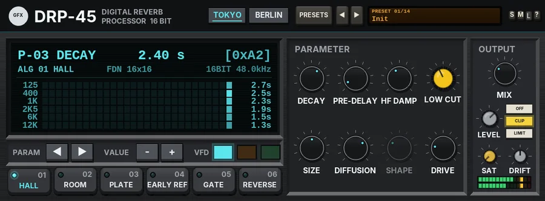

DRP-45
An early-80s digital broadcast reverb and delay with two machines in one case: a clean 16-bit terminal and a gritty 12-bit laboratory rack.

Overview
DRP-45 holds two digital reverbs from the early 80s, switched by the TOKYO and BERLIN keys. The faceplate and the algorithms change together.
TOKYO is in the spirit of the Japanese broadcast and research-lab reverbs of the time: massively parallel 16-bit processing, entered from a terminal with a monochrome display, data-entry keys and rubber program selectors. It is clean and dense, with no modulation and no smear on transients. It has six algorithms: HALL, ROOM, PLATE (glassy), EARLY REF, GATE and REVERSE.
BERLIN is in the spirit of the East German state-laboratory broadcast processors: brute-force digital delay and reverb on locally made memory with discrete converters. The tank is band-limited to about 9 kHz and runs at around 12 bits, there is an input transformer and companding noise, and pushed hard the reflections smear into a gritty wash. It has four algorithms: RAUM A, RAUM B, PLATTE B and a ping-pong ECHO.
The rooms and plates use a 16-line feedback delay network, so the tails are smooth and dense, and the measured decay time matches the DECAY setting closely. Changing machine or algorithm fades the return out, clears it and fades back in (25 ms), so there are no bursts.
Reach for it for
- Clean, dense 80s halls, rooms and plates
- Gated snare and reverse reverb effects
- Short early reflections to place a sound in a room without a tail
- Gritty, lo-fi post-punk rooms and smeared washes (BERLIN)
- Dark, band-limited ping-pong echoes
- A reverb on a send (MIX 100%) or straight on an insert
Controls
The header
- TOKYO / BERLIN
- Chooses the machine. Each keeps its own algorithm choice; the other controls are shared.
- PRESETS
- Opens the full preset list.
- ◄ / ►
- Step to the previous or next preset (wrapping round).
- Preset display
- Shows the preset number and name. Click it for the preset list too.
- S / M / L
- Panel size: small, medium or large. The panel also scales to fit the plugin window.
- ?
- Opens a pop-up with the design credit, the GFX website address and the address of this manual. Click anywhere to close it.
TOKYO: the display
The top line shows the selected parameter's address (P-01 to P-12), its name and value, and its position as a hexadecimal number. Touching a knob jumps the display to that knob's address. Below it, a status line shows the algorithm, its structure (FDN 16x16, ER 16 TAP or NL 96 TAP), the word length and the sample rate. The matrix underneath shows the reverb's energy in six bands (125 Hz to 12 kHz) as it dies away, newest on the right, with the predicted decay time of each band on the right (ER for EARLY REF, the gate length for GATE and REVERSE).
TOKYO: PARAMETER
- DECAY
- The reverb time, 0.2 to 10 s (2.4 s by default). In EARLY REF it sets how quickly the reflections fall away. In GATE the knob becomes GATE, and in REVERSE it becomes LENGTH: the length of the burst, 60 to 1000 ms (300 ms by default).
- PRE-DELAY
- The gap before the reverb starts, 0 to 300 ms (20 ms by default). Changes glide smoothly.
- HF DAMP
- How much sooner the highs die than the mids, 0 to 100% (40% by default): 0% = as long, 100% = about a seventh of the time. It clicks into steps of 10 (hold Shift for fine moves without the steps).
- LOW CUT (yellow cap)
- A 12 dB per octave high-pass on the reverb return, 20 to 600 Hz (80 Hz by default), to keep the low end of the mix clear.
- SIZE
- The size of the space, 50 to 150% (100% by default): it scales every delay in the tank and the spread of the early reflections. Greyed out in GATE and REVERSE.
- DIFFUSION
- How quickly the echoes blur into a smooth tail, 0 to 100% (70% by default). Greyed out in EARLY REF.
- SHAPE
- GATE and REVERSE only (greyed out otherwise), 0 to 100% (30% by default). In GATE it tilts the burst down (0 = flat, 100 = 14 dB down across it); in REVERSE it makes the rising ramp steeper.
- DRIVE
- 0 to 100% (20% by default): 0 to +18 dB into a clean 16-bit converter and the same back out, so it adds colour, not level. Transparent until full scale, then a firm soft clip.
TOKYO: OUTPUT
- MIX
- The dry / wet balance, 0 to 100% (30% by default, for an insert). The dry signal stays at full level up to 50% and the wet is at full level from 50%; at 100% you hear only the reverb (use this on a send).
- LEVEL
- The output level, -24 to +12 dB.
- OFF / CLIP / LIMIT
- The final stage: nothing, a soft clipper at -0.3 dBFS (no latency, the default), or a lookahead limiter that holds the peaks at -0.3 dBFS (3 ms latency, compensated by REAPER). While the output clips, the CLIP key flashes red.
- SAT
- Band saturation on the way out: only the lows and highs are saturated (the mids stay clean), with a soft curve that loosens as the level rises. 0% by default.
- DRIFT
- See Drift below.
- Meters
- The left and right output levels.
TOKYO: the keys
- PARAM ◄ / ►
- Step through the parameter addresses: P-01 ALGORITHM, P-02 PRE-DELAY, P-03 DECAY (or GATE TIME / REV TIME), P-04 HF DAMP, P-05 LOW CUT, P-06 SIZE, P-07 DIFFUSION, P-08 SHAPE, P-09 DRIVE, P-10 MIX, P-11 DRIFT and P-12 OUTPUT.
- VALUE - / +
- Step the selected parameter down or up in small, precise steps (for example 0.05 - 0.25 s for DECAY, 5 Hz for LOW CUT, 0.5 dB for OUTPUT).
- VFD
- Three colour swatches for the display: cool cyan, neon amber or phosphor green. They share the skin setting with the BERLIN panel.
- 01 HALL - 06 REVERSE
- The rubber program selectors: HALL, ROOM, PLATE, EARLY REF (16 discrete reflections per side over 24 - 120 ms, no tail), GATE (a dense, flat burst that stops dead) and REVERSE (a rising swell that stops dead). The lit one is in use.
BERLIN: PROGRAMM
- 1 RAUM A / 2 RAUM B / 3 PLATTE B / 4 ECHO
- The four programs: a small room, a larger room, a plate, and a ping-pong echo with two extra taps whose repeats are band-limited, damped, quantised and saturated.
- BEREIT
- The ready lamp.
- ÜBERLAST
- Lights when the tank overloads and soft-clips.
BERLIN: ZEIT
- VORVERZÖGERUNG
- The pre-delay, 0 to 300 ms: the big knob in 20 ms steps, FEIN (the small knob) adds 0 to 20 ms in between.
- NACHHALL
- The reverb time, 0.2 to 10 s: the big knob in 13 steps (0.2, 0.3, 0.4, 0.6, 0.8, 1, 1.4, 2, 2.8, 4, 5.6, 8, 10 s), FEIN sets the time between two steps. In ECHO it reads ABKLINGEN: how long the repeats take to fall 60 dB.
While you touch a ZEIT knob, the value replaces its name.
BERLIN: KLANG
- DÄMPFUNG
- HF damping, as HF DAMP above (in ECHO it also darkens each repeat).
- TIEFEN
- The low cut on the return, 20 to 600 Hz.
- ANTRIEB
- Drive, 0 to 100%: 0 to +24 dB into the input transformer (the lows saturate the core first) and an asymmetric early-silicon stage, level-compensated. It also thickens the reflections into a gritty wash, and saturates the echo loop.
- KÖRNUNG
- Grain: the word length of the tank, from 16 bits (0%) to 9 bits (100%), shown in bits while you turn it. It sets the stepping and grain in the tail and the level of the companding noise.
- GRÖSSE / ECHOZEIT
- GRÖSSE: the size, as SIZE above. In ECHO the knob becomes ECHOZEIT, the echo time, 40 to 1000 ms (300 ms by default); changes glide.
- DIFFUSION
- As above; in ECHO it smears the repeats.
BERLIN: the meters
- AUSSTEUERUNG
- The input level into the machine.
- REGELRESERVE
- The headroom left before the tank overloads. When it runs out, ÜBERLAST lights.
BERLIN: AUSGANG
- MISCHUNG
- The dry / wet balance, as MIX above.
- PEGEL
- The output level, -24 to +12 dB.
- OFF / CLIP / LIMIT, SAT, DRIFT
- As on the TOKYO panel.
BERLIN: the bottom strip
- SKIN: ENAMEL / VFD / MATRIX
- The look of the BERLIN panel: bone-grey enamel, a charcoal panel with turquoise print, or a battleship-grey military LED style. Looks only. The choice also sets the TOKYO display colour.
Drift
DRIFT (0 - 100%, 50% by default) is converter and clock wander. On BERLIN the tank delays wander slowly (up to about 0.25 ms at 50%), and converter hiss (about -88 dBFS) and a 50 Hz hum (about -90 dBFS) sit on the return. TOKYO has a crystal clock and stays clean: only the decay time wanders, by up to 1.5% at 50%. At 0% both machines stay still.
Knobs: drag up or down (Shift for fine moves) or use the mouse wheel; double-click to reset a knob to its default.
Presets
Presets set the machine, the algorithm and all the reverb controls with MIX and DRIFT. The skin, OUTPUT, SAT and the output stage are left as they are. The list also has Reset all to defaults, which sets every control, those included, back to its starting value.
- Init
- TOKYO HALL, 2.4 s, 20 ms pre-delay, MIX 30%.
- Tokyo Snare Gate
- GATE, 280 ms with a slight downward tilt, high diffusion and a 150 Hz low cut: the classic gated snare.
- Arcade Hall
- A big HALL: 3.6 s, SIZE 130%, 35 ms pre-delay and bright damping.
- Glass Plate
- PLATE, 2.2 s with very little damping: glassy and bright.
- Early Punch
- EARLY REF at SIZE 80%: a short, punchy room sound with no tail.
- Reverse Vocal
- REVERSE, 450 ms with SHAPE 50% and a 180 Hz low cut.
- Neon Room
- A tight ROOM, 0.9 s.
- Berlin Raum
- BERLIN RAUM A, 1.2 s, darker damping.
- Post-Punk Drums
- RAUM B, 1.6 s, with ANTRIEB 65% and a coarser grain: a gritty, crunchy drum room.
- Plattenbau Hall
- RAUM B stretched to 4.5 s, SIZE 140% and 40 ms pre-delay.
- Grau Echo
- ECHO at 375 ms with 3 s of repeats, dark and slightly smeared.
- Smeared Wash
- PLATTE B, 6.5 s, heavily driven, full diffusion and grain 80%: a gritty wash.
- Studio Send 100%
- The TOKYO HALL with MIX at 100%, for use on a send.
- Funkhaus Vocal
- PLATTE B, 2 s with 45 ms pre-delay and a finer grain: a broadcast vocal plate.
Tips
- On a send, set MIX (MISCHUNG) to 100%; on an insert, 20 - 35% is usually plenty.
- A pre-delay of 20 - 60 ms keeps a vocal clear of its reverb.
- Raise LOW CUT to 150 - 250 Hz to stop long reverbs muddying the low end.
- For the 80s gated snare, use GATE on a send at 250 - 350 ms and compress the return.
- On BERLIN, watch REGELRESERVE: if ÜBERLAST lights a lot, lower ANTRIEB or the input level - unless you want the crunch.
- Use the TOKYO VALUE - / + keys for exact, repeatable settings.
File: gfx-drp-45.jsfx